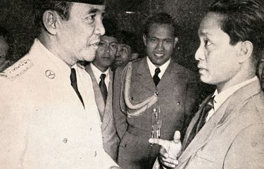
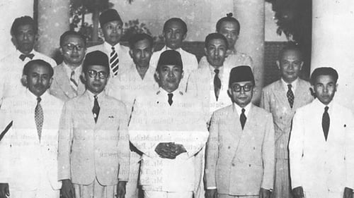
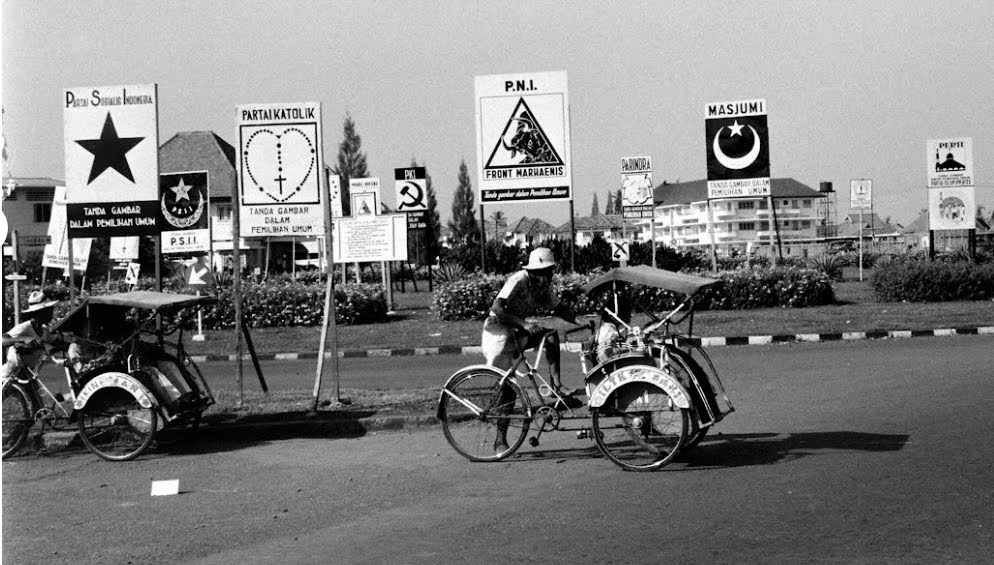
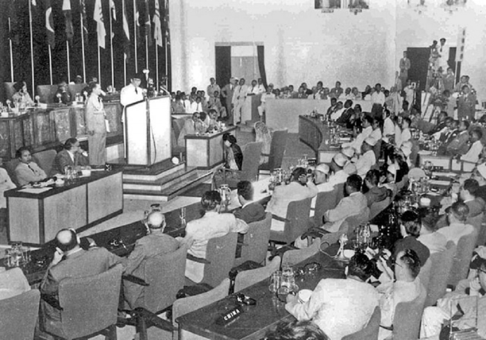
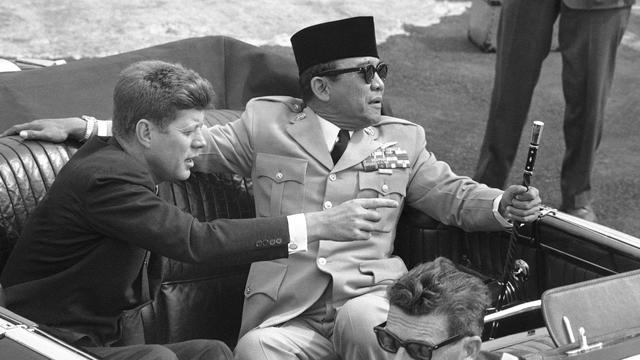
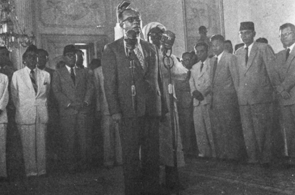

DEMOKRASI PARLEMENTER (1945-1959)

|
Pengertian Demokrasi Parlemen adalah masa ketika pemerintah Indonesia menggunakan UUDS 1950 (Undang-Undang Dasar Sementara) sebagai undang-undang negara dan sistem pemerintahan parlementer. Konsep pemerintahan negara pada masa itu adalah pemberian kekuasaan atau otoritas pada para parlemen dalam mengerjakan tugas-tugas negara, dan Presiden hanya sebagai simbol kepala negara saja. Kabinet dan perdana menteri bertanggung jawab dan melapor pada parlemen (DPR), bukan kepala negara. Disebut pula masa Demokrasi Liberal karena pemberlakuan prinsip-prinsip liberal (lebih mengutamakan hak individu) pada sistem politik dan ekonomi yang berlaku. Masa ini berlangsung mulai 17 Agustus 1950 sampai 6 Juli 1959  Sejarah dan Peristiwa Penting Presiden Sukarno mengeluarkan Dekrit Presiden pada 5 Juli 1959, yang berisikan… : Dewan Konstituante dibubarkan (dengan alasan konflik antargolongan dan ketidakmampuan untuk menetapkan dasar negara yang jelas) Indonesia kembali ke UUD 1945 alias meninggalkan UUDS 1950. Dibentuknya Majelis Permusyawaratan Rakyat Sementara (MPRS) dan Dewan Pertimbangan Agung Sementara (DPAS). Demokrasi Parlemen digantikan dengan sistem Demokrasi Terpimpin (1959-1965)  (Gambar Pemilu 1995)  (Gambar Konferensi Asia Afrika)  (Gambar Tragedi Cikini)  (Gambar Deklarasi Djuanda) |
Beberapa Kabinet yang melegitimasi pemerintahan pada masa demokrasi Parlementer beserta sejarahnya… :
Pemilu 1995 | Pemilihan umum (Pemilu) pertama dan dikatakan sebagai “pemilu paling demokratis” yang pernah terjadi di Indonesia terlaksana pada tahun 1955. Pemilu 1995 dilaksanakan dalam rangka memilih anggota-anggota parlemen (DPR) dan Konstituante. Konstituante adalah badan independen yang akan membentuk UUD baru menggantikan UUD 1950 Sementara yang digunakan selama masa Demokrasi Parlementer dan berhak merubah konstitusi negara. Sistem yang digunakan pada Pemilu 1955 adalah perwakilan proporsional, dengan ketentuan setiap daerah berhak mendapatkan jatah minimal enam kursi untuk Konstituante dan tiga kursi untuk parlemen. Pendaftaran dimulai sejak Mei 1954 - November 1954. Melansir Kompas.Com, dari data yang terkumpul, sebanyak 87,65 persen atau 37.875.229 jiwa yang menggunakan hak suaranya. Pada waktu itu, anggota TNI dan Polri juga boleh ikut memberikan hak suaranya. Pada pelaksanaan pemilu pertama terdapat 208 daerah kabupaten, 2.139 kecamatan, dan 43.429 desa. Pelaksanaan pemilu dibagi menjadi 2 gelombang.. : Gelombang pertama : memilih anggota DPR. (29 September 1955) Diikuti oleh 29 partai politik dan individu. Gelombang kedua Pemilu : memilih anggota Konstituante. (15 Desember 1955.) Konferensi Asia Afrika Konferensi Asia Afrika merupakan gagasan yang lahir dari perasaan senasib sepenanggungan, antara negara-negara di kawasan Asia dan Afrika sebagai dampak dari Perang Dunia II, serta ketakutan dunia akan kembalinya perang dunia. Sebab, ada kondisi yang memanas di antara dua blok yakni blok barat dan blok timur. Konferensi itu juga merupakan bentuk solidaritas negara-negara perwakilan, untuk berupaya menghapus penjajahan dari negerinya dan negeri di sekitar Asia-Afrika. Konferensi Asia Afrika dilaksanakan di Bandung pada 18 April 1955 dan disambut meriah oleh rakyat. Sorak gembira dan tepuk tangan meriah rakyat menyambut kehadiran tamu-tamu kenegaraan di sepanjang Jalan Asia Afrika. Setelah mengumandangkan lagu kebangsaan Indonesia Raya, Presiden Soekarno pidato dengan judul Let a New Asia And a New Africa be Born (Mari Kita Lahirkan Asia Baru dan Afrika Baru). Soekarno menekankan pada para peserta konferensi bahwa meski latar belakang identitas negara mereka berbeda, namun mereka semua dipersatukan oleh pengalaman pahit kolonialisme dan keinginan yang serupa dalam usaha mempertahankan dan memperkokoh perdamaian dunia. Meskipun ada kesulitan pada beberapa aspek seperti halnya perbedaan pandangan politik selama sidang tersebut, berkat sikap bijaksana para pimpinan sidang, serta tingginya rasa toleransi dan kekeluargaan di antara peserta konferensi, maka sidang dapat terselesaikan dengan menghasilkan konsensus yang tertuang dalam komunike akhir, isinya mengenai: Kerja sama ekonomi dan kebudayaan, HAM dan hak menentukan nasib sendiri, masalah rakyat jajahan, deklarasi tentang memajukan perdamaian dunia dan kerja sama internasional. Deklarasi pada komunike tersebut menghasilkan Dasasila Bandung, yang berisi prinsip-prinsip dasar dalam usaha memajukan perdamaian dan kerja sama dunia. Tragedi Cikini Tragedi Cikini adalah percobaan penggranatan untuk membunuh Presiden Soekarno di Jalan Cikini No. 76 Jakarta Pusat. Terjadi pada Sabtu malam 30 November 1957, Soekarno sedang menghadiri acara perayaan hari jadi Perguruan Cikini yang ke-15 di sekolah Guntur dan Megawati. Latar tempat kejadian pengeboman di halaman sekolah tersebut, upaya pembunuhan dilakukan oleh Jusuf Ismail anggota pemberontak Darul Islam/Tentara Islam Indonesia (DI/TII) bersama rekannya dengan melemparkan enam buah granat ke arah Presiden Soekarno. Lima di antaranya meledak dan menewaskan 10 orang anak sekolah dan mencederai 48 orang. Beruntungnya, Presiden Soekarno dan kedua anaknya, Guntur dan Megawati selamat dari insiden tersebut. Serangan ini dilatarbelakangi oleh ketidakpuasan orang-orang dengan kondisi politik yang terjadi pada masa pemerintahan Soekarno, dimana serangan ini bertujuan untuk menyingkirkan Soekarno dari kursi kepresidenan. Keempat terdakwa pelaku tragedi Cikini diputuskan diberi hukuman mati di hadapan regu tembak pada 28 Mei 1960. Deklarasi Djuanda Deklarasi Djuanda adalah salah satu bentuk perjuangan bangsa Indonesia dalam memperjuangkan batas wilayah laut serta upaya memperluas dan memperkuat kedaulatan laut Indonesia. Wilayah laut perlu diperjuangkan karena di dalamnya terdapat sebuah kesatuan yang dapat dilihat baik dari aspek politik, sosial budaya, hingga pertahanan-keamanan. Dengan adanya Deklarasi Djuanda, maka Indonesia menyatakan kepada dunia tentang laut Indonesia termasuk laut sekitar, di antara dan di dalam kepulauan Indonesia yang menjadi satu kesatuan wilayah NKRI, sehingga kawasan laut Indonesia tidak mudah dimanfaatkan oleh pihak luar. Untuk itu, dibuatlah deklarasi dalam menanggapi hal tersebut oleh Perdana Menteri Ir. H. Djuanda pada 13 Desember 1957 yang kini kita kenal sebagai Deklarasi Djuanda. Namun pengajuan Deklarasi Djuanda tidak langsung disetujui dan masih ada yang menentang, namun setelah perjuangan bertahun-tahun Deklarasi Djuanda diterima oleh dunia dan sudah tercantum dalam Konvensi Hukum Laut PBB (United Nations Convention on the Law of the Sea atau UNCLOS) pada tahun 1982, dan secara resmi diratifikasi oleh 60 negara pada tahun 1994. |